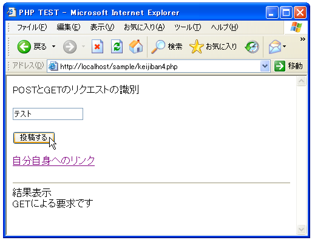
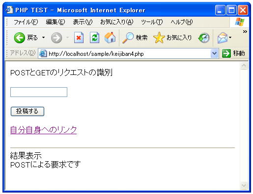
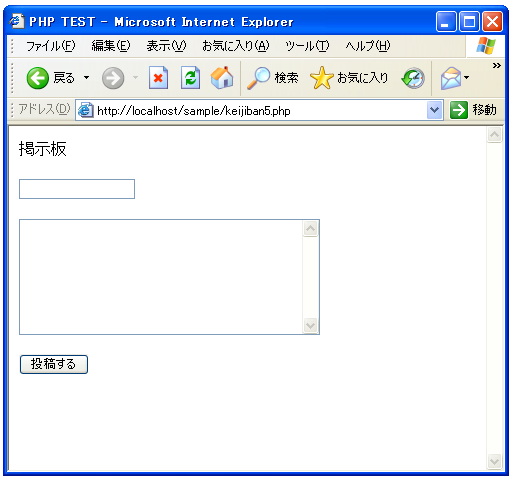
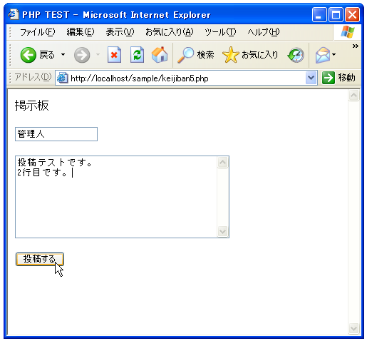
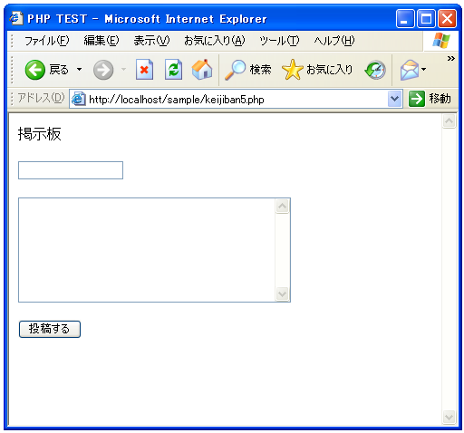
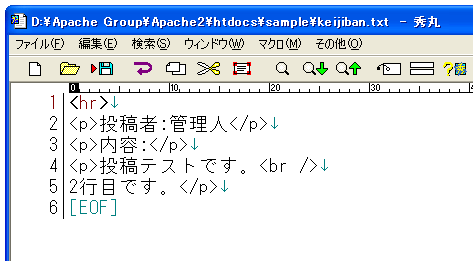
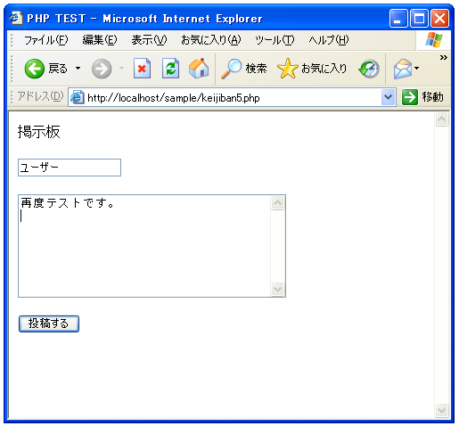
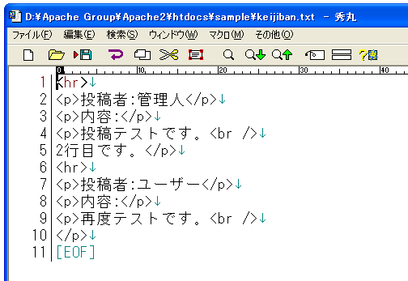

- Home ›
- PHP入門 ›
- PHPサンプルプログラム ›
- 掲示板
POSTかGETかを判別
前回見たとおり、フォームから投稿された結果表示された場合を除いてファイルには何も書き込まないようにしてみます。
フォームからの投稿によって表示されたのかどうかの判別の方法はいくつかありますが、フォームからPOSTでリクエストが来ているのか、それてともURLを直接指定して表示されているのかで判別してみます。フォームでGETを指定した時だけではなく単にブラウザでHTMLファイルを要求した時もGETのリクエストが来る事になっています。
実際には下記のように「$_SERVER["REQUEST_METHOD"]」を調べることでPOSTかGETかどちらで要求が来ているかを調べることができます。
if($_SERVER["REQUEST_METHOD"] != "POST"){
// ブラウザからHTMLページを要求された場合
}else{
// フォームからPOSTによって要求された場合
}
一度簡単なサンプルで確認してみましょう。
<html>
<head><title>PHP TEST</title></head>
<body>
<p>POSTとGETのリクエストの識別</p>
<form method="POST" action="<?php print($_SERVER['PHP_SELF']) ?>">
<input type="text" name="personal_name"><br><br>
<input type="submit" name="btn1" value="投稿する">
</form>
<p>
<a href="<?php print($_SERVER['PHP_SELF']) ?>">自分自身へのリンク</a>
</p>
<?php
print('<hr>結果表示<br>');
if($_SERVER["REQUEST_METHOD"] != "POST"){
print('GETによる要求です');
}else{
print('POSTによる要求です');
}
?>
</body>
</html>
上記はPOSTかGETかの簡単なテストを行うものです。
では実際にWWWサーバに設置して試してみます。まずブラウザで直接URLを指定して開いた場合です。
上記のように直接要求した場合は「GET」となります。次にフォームに適当な値を入れてから投稿ボタンを押してみて下さい。


上記のようにフォームでは「POST」による通信を指定していますので、結果は「POST」となります。最後に「自分自身へのリンク」と書かれた箇所をクリックして下さい。

リンクをクリックされたことによって要求が合った場合も、直接URLを指定して開いた場合と同じですから「GET」になります。
掲示板への適用
以上のことを利用して、ページが開こうとした時に「POST」による要求であれば何か投稿が行われた結果となりますので、その時はファイルへの書き込みを行い、そうではない時は単にページを開くだけにしてファイルへの書き込みは行わないようにしてみます。
<html>
<head><title>PHP TEST</title></head>
<body>
<p>掲示板</p>
<form method="POST" action="<?php print($_SERVER['PHP_SELF']) ?>">
<input type="text" name="personal_name"><br><br>
<textarea name="contents" rows="8" cols="40">
</textarea><br><br>
<input type="submit" name="btn1" value="投稿する">
</form>
<?php
$personal_name = $_POST['personal_name'];
$contents = $_POST['contents'];
$contents = nl2br($contents);
print('<p>投稿者:'.$personal_name.'</p>');
print('<p>内容:</p>');
print('<p>'.$contents.'</p>');
?>
</body>
</html>
WWWサーバに設置してからまずブラウザで見てみます。(念のため、keijiban.txtは削除しておいて下さい)。

初回表示の際には「GET」での要求ですので、ファイルに何も書き込みは行われません。またファイル自体が存在しない場合にも、この時点ではファイルの作成も行われていません。
次に何か適当な値を入れてから、「投稿する」ボタンをクリックして下さい。


見た目上は変化がありませんが、ファイルが新規に作成され下記のように書き込みが行われています。

さらに別の投稿を行ってみます。

追加で投稿された内容がファイルに書き込みされています。

これで書き込みは終了です。次のページで書き込んだ内容を表示するようにして完成となります。
( Written by Tatsuo Ikura )

著者 / TATSUO IKURA
初心者～中級者の方を対象としたプログラミング方法や開発環境の構築の解説を行うサイトの運営を行っています。